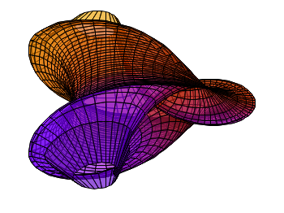

April 27th, 2010 | 29 Comments
As a physicist I’m using gnuplot since the early days of my studies. I’m a big fan of terrific looking plots and that’s why I have spent a lot of time working with gnuplot. I hope you will also enjoy plotting with it.
If you have any suggestions or wishes, please feel free to contact me.
You can get gnuplot from http://www.gnuplot.info, where you can find also a lot of documentation and examples.
For learning gnuplot you can have a look under the “Gnuplot basics” menu item. There I discuss briefly the plotting of data from files or from functions. In addition, the handling of the most common output formats of gnuplot are considered. For me personally the nice Not so Frequently Asked Questions site was very helpful for getting started with gnuplot.
Note that all the plots on this site were done under Linux. The used gnuplot version is indicated for every figure in its corresponding *.gnu file or 4.4 if not indicated.

Thanks for this website.
I was struggling to get good quality eps files, and facing some problem with the
default small fonts in figures.
From u r site I got the ans very quickly.
Thanks again
I can’t believe I just found out about this excellent site. You’ve really thought deeply about how to get the best out of gnuplot. Thanks for your hard work and for sharing.
Thank you very much for this great website. It is very very useful.
Thanks!
Whoa! I have just found out this website: it’s astonishing! I’m looking forward to digging in it!
Get a facebook page. It would thus be more convenient to follow and share the awesome ideas that you have.
I will just echo the words of the previous comments: thanks for this great site and all the suggestions and insights!
Keep up with the good work. It is a fantastic resource for those like me who are gnuplot newbie.
Thank you very much for your wonderfully clear website! About a year ago I decided to move to Linux and to use gnuplot to plot my data. The degree of control that I have over my graphs is fantastic and I use your website regularly to learn new tricks. Looking forward to new postings!
Hi. I have a little problem with gnuplot, I need to overlap the graphics below, but gnuplot with the function multiplot aren’t doing overlap splot.
If you have an idea to resolve my little problem, I’ll be grateful for the help.
Greetings.
Hi Sergio.
I’m afraid I don’t understand your problem. If I run your commands in a multiplot the result is three overlapping splots.
I really like your website. It made me a advanced level gnuplot user :) :P
Big fan of your website and even more so of terrific looking plots.
A few interesting topics for you to cover would be to check which colours are scientificly matching to plot a graph (or something along this line). For example I really like the red and blue colour together.
Since gnuplot 5.0 will come out in one month orso it would be interesting if you could highlight some of the improvements in this version which will allow to make even nicer looking graphs.
keep up the good work!
Simon
Thanks a lot for the amazing work you have been doing! It has helped me a lot work my way through many problems I have had with gnuplot. Keep up the good work!
Big fan of your website here, I really appreciate the time and effort you put in here that is very helpful to me on practical gnuplot issues.
Guys I have a question about plotting with impulses. Say I have a set of data ranging from [-50:-10]. If I plot with impulses I’ll have impulses all pointing down from y=0 axis, but what I want is for them to start from some neg. values, e.g. -60, that way all impulses would point up.
Is there a more decent way to tell gnuplot to do this? Currently my way around it is to plot “file” using ($1+60) then change ytics so that it still shows a range [-50:-10]. It does work but I’m curious if there’s a better way.
Thanks!
Hi Haoyu.
I’m afraid there is no better way, because you can not specify the starting point of a the single impulses to be different from 0, like it is the case for filledcurves.
Hi Hagen, hi all,
Here is a question:
Anyone knows how to change the default linestyle in gnuplot ? or to save a master linestyle file somewhere ?
This is just because I spend my time copypasting styles from plotfile to plotfile in order to be consistent with the many figures I plot, but it would be much easier if I could define, one for all file where I create my styles….
Any idea or suggestion ?
Best,
Hi Antoine,
you can use a configuration file to store your own line style settings. I don’t do it in the post on this site, this has the advantage that the code runs in a single file. Another possibility is to change the default line type setting.
Hi Hagen,
The release note of Gnuplot 5 says that bold and italic font faces are now supported in the default terminal, but I could not find out how to do that. Using “Helvetica-Bold” or “Helvetia-Italic” as the font name worked for postscript enhanced terminal, but not the default terminal. Is there a way around this?
Thank you for this great website.
Hi Aparna.
I haven’t tested gnuplot 5 so far ;)
Hi Hagen,
I have finally found another big fan of terrific plots on gnuplot! Thanks for your amazing tips, I’m learning a lot.
Thank you ! Your blog is awesome !
That’s an AWESOME blog !!!!!!! Thanks you for sharing !! :’-D
As an occasional user of gnuplot, I find the information on this web site a wonderful resource.
Thank you very much for sharing your expertise!
Thanks so much for this plot! I really leveled up the aesthetics of my plots for my Master Thesis. The provided examples are really fantastic. Thank you for sharing your work.
Thanks a lot for this website!
I’ve really appreciated all shared examples, tips, tricks available; it helped me a lot to build a small integration to plot directly from live data.
Keep it going!
Thank you for this helpful website.
Thank you very much for sharing your very handy tips and tricks. Your website is also very well designed.
Please write a gnuplot book, based on the content of your websites.